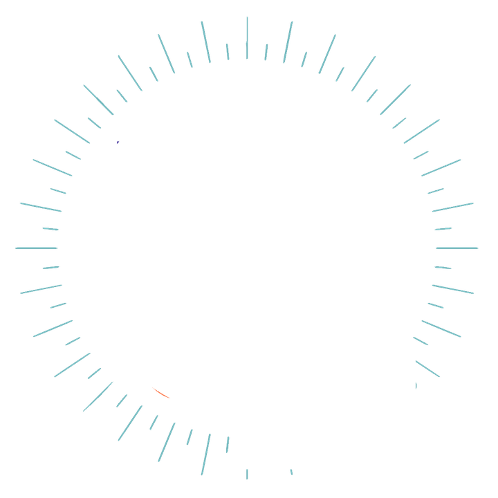
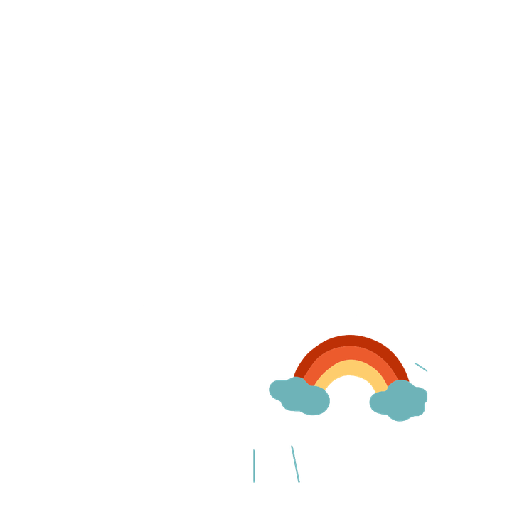
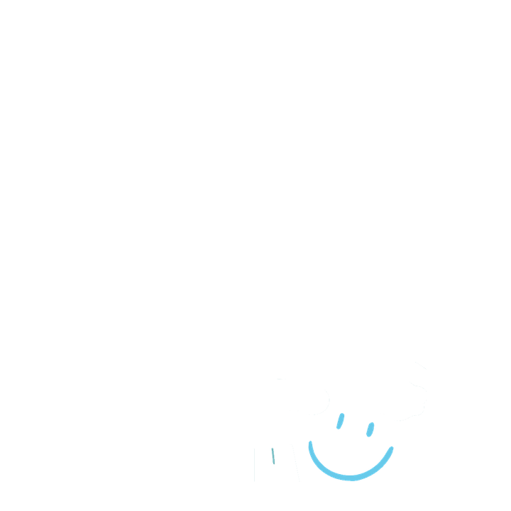
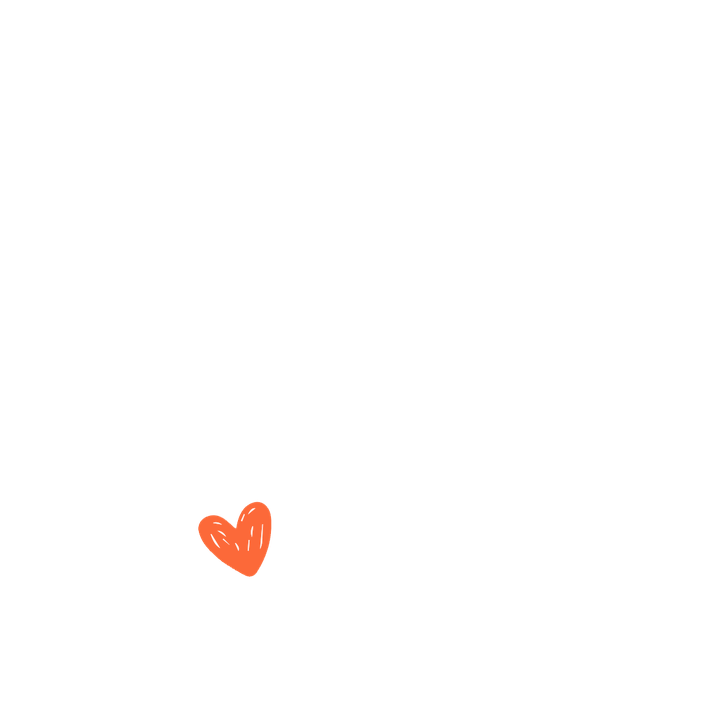
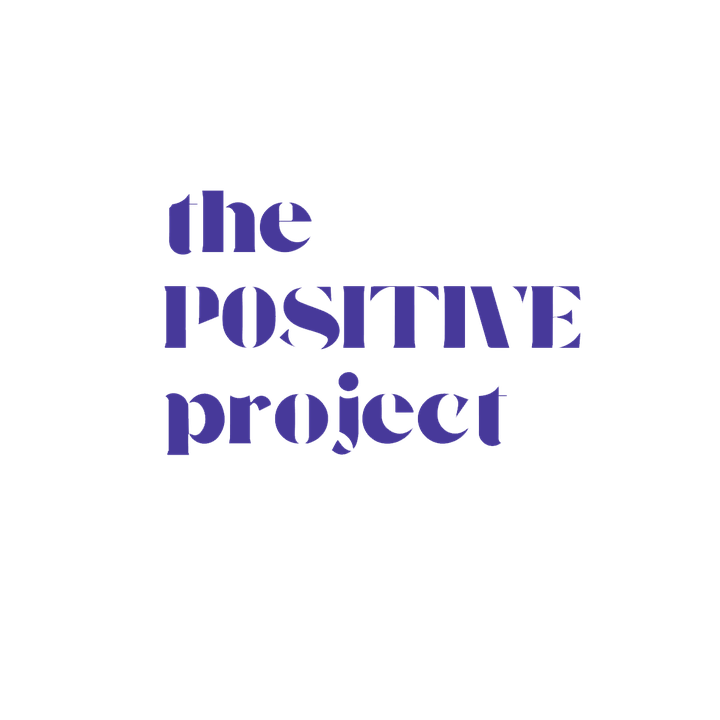
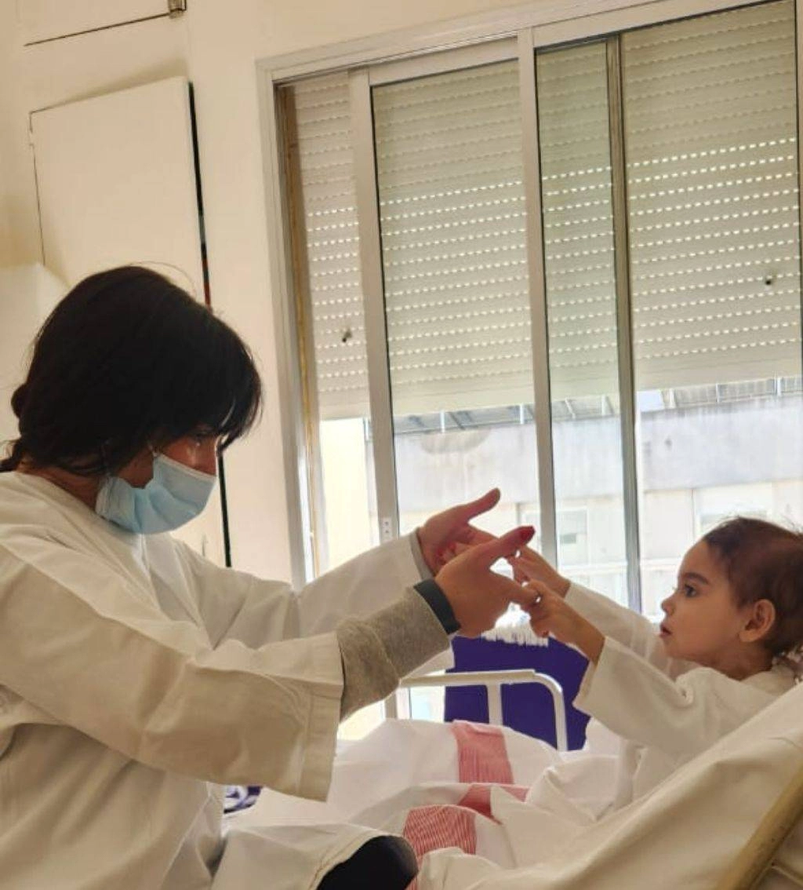
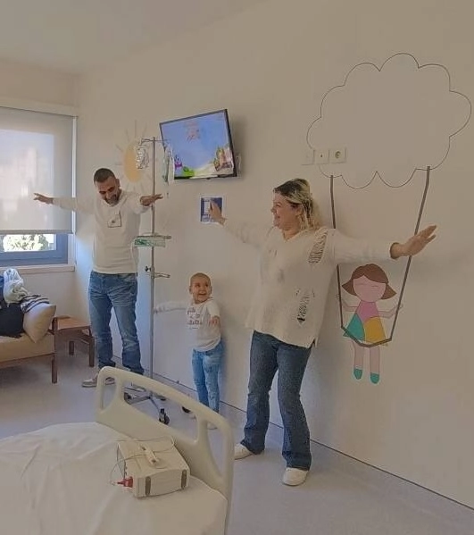
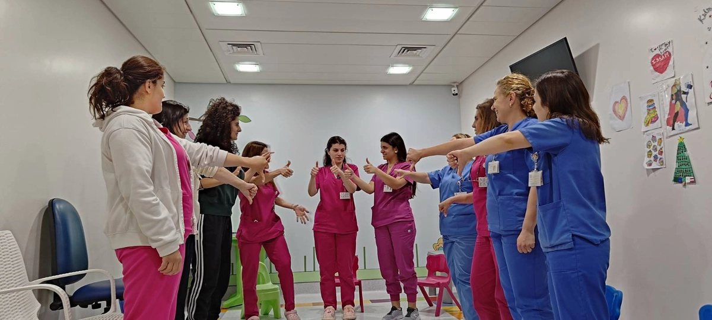

A global wellness and engagement program for young patients in hospitals
Our ambition: to advance mental health support for children, adolescents and young adults in hospitals and care centers through stronger patient engagement and applied research.
The question that has guided us from the beginning:
“What if healing did not start in hospitals… but in the heart of a child?”
Our mission
To find the key to each child’s heart: helping them reconnect body and mind, become the lead of their healing process and, beyond that, of their own life.
We work directly with the children, and also with everyone around them: their families and the medical teams.
Because for us, healing is not only medical. It is, above all, deeply human.
POSITIVE: more than a word for us
The POSITIVE project: Playful, Optimistic, Serene and Imaginative, it shares and brings up Talents, Inventive powers, carries good Vibes and is Engaging not only for the children in hospitals and care centers but also for their environment (families, nurses and doctors along with our team and the expert coaches).
How we support
Tailored approaches for different needs
-

For Children
Playful sensory sessions that support emotional regulation, body awareness and moments of joy.
-

For Families
Soft guidance, presence practices and a gentle space to breathe and connect.
-

For Medical Teams
Practical tools to bring calm and uplift the atmosphere in hospitals and care centers.
Since July 2024
Figures as of October 2026.
- 1,200+
- children supported
- 6,500+
- interactions followed and documented
- 4
- university hospitals in BeirutSt George UMC
Hôtel-Dieu de France CHU
LAUMC-Rizk
Hôpital Libanais Geitaoui CHU - 30+
- monitors & experts

Take Action for Children in Hospitals & Care Centers
More engaged young patients today are healthier, more autonomous and more engaged adults tomorrow.